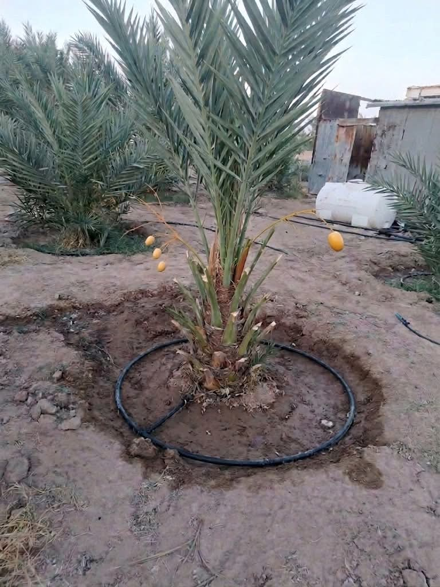

VARIEDAD
Medjool
Reconocido por su tamaño, textura suave y característico sabor dulce.
CALIDAD • TRADICIÓN • SABOR
Descubre el sabor y la calidad de nuestros dátiles. Conoce nuestras variedades y encuentra más información directamente en nuestra página de Facebook.

En Dátiles del Valle nos dedicamos a ofrecer productos seleccionados, cuidando su presentación, calidad y sabor.
Nuestro objetivo es acercarte a diferentes variedades de dátiles y brindarte información para que conozcas mejor nuestros productos.
Conócenos en Facebook →Conoce algunas de las variedades que distinguen a este fruto por su textura, apariencia y sabor.
Reconocido por su tamaño, textura suave y característico sabor dulce.

Una variedad de textura firme y sabor delicado, apreciada por su versatilidad.

Destaca por su sabor particular y una textura agradable que lo hace diferente.
Un fruto apreciado por su sabor, textura y variedad de formas de consumo.
Los dátiles se caracterizan por su sabor naturalmente dulce.
Existen variedades con distintos tamaños, sabores y texturas.
Pueden disfrutarse solos o utilizarse en diferentes preparaciones.
Buscamos ofrecer una presentación cuidada de nuestros productos.
Haz clic en cualquiera de las fotografías para verla en tamaño completo.
Consulta nuestras publicaciones, fotografías y novedades directamente en nuestra página.
Para información sobre nuestros productos, disponibilidad o novedades, contáctanos a través de Facebook.
Visita nuestra página oficial para conocer más información y comunicarte con nosotros.